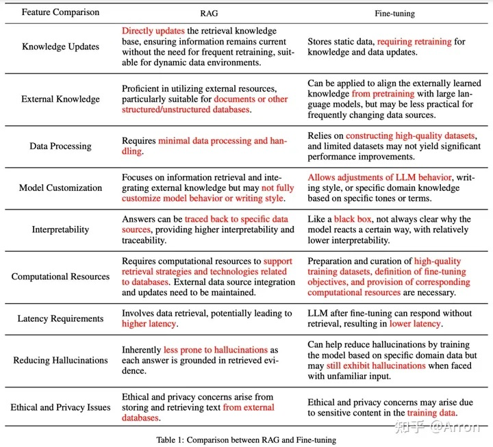

RAG vs FT[1] #
RAG vs 微调[场景] #
-
动态数据：RAG
-
模型能力定制：微调
-
幻觉：RAG > 微调
-
可解释性：RAG
-
成本：RAG
-
依赖通用能力：RAG
微调会有灾难性的遗忘
- 延迟：微调
rag的流程长
- 智能设备：微调
【rag和微调可以一起使用】
应用 Case #
A: 投资理财规划师 [用RAG]
- 处理动态数据：RAG
- 很强的对话能力：RAG
- 金融能力：微调 ×
B: 金融信息抽取Bot [用微调]
- 很强的抽取能力：微调 [特定的能力]
- 金融能力
C: 销售机器人 [用RAG+微调]
- 多轮对话/动态：RAG
- 销售技巧/语气：微调
RAG vs FT [2] #

todo: 有中文翻译的图片
参考 #
-
#1《Retrieval-Augmented Generation for Large Language Models: A Survey》